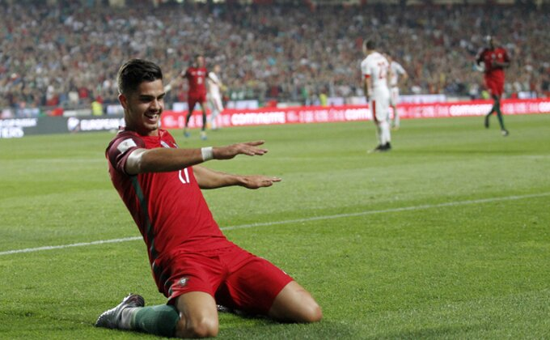

Najnovije Vesti
Loše vesti za Barsu, sezona za napadača je završena!

Ansu Fati će po svemu sudeći propustiti ostatak sezone pošto mu se povreda meniskusa ponovo pogoršala.
Izvori iz Katalonije danas su otkrili da Fatijev oporavak ponovo ne teče po planu, nakon što je podvrgnut i drugoj operaciji meniskusa.
Fati je povredu doživeo početkom novembra, kada mu je predviđena četvoromesečna pauza, ali se njegova situacija zakomplikovala.
Fati će navodno u naredne dve nedelje pokušati da trenira pod opterećenjem, ukoliko oseti bilo kakav bol u kolenu, moraće i na treću operaciju što znači da će propustiti ostatak sezone, ali i Evropsko prvenstvo.
Mladi napadač Barselone je imao start sezone iz snova, bio je jedan od najboljih uz Lea Mesija, ali je onda počeo pakao sa povredom.
Ukoliko ode na novu operaciju, glavni cilj biće da se oporavi do priprema za narednu sezonu...
06.04.2021.
Ajntraht ostaje bez udarne igle, Laporta nasao novu devetku !?

Prvi napadač Ajntrahta iz Frankfurta Andre Silva mogao bi na leto da se se preseli u Barselonu nakon izvanredne sezone u nemačkom bundesligašu, prenosi BILD.
Portugalski napadač je eksplodirao ove sezone postigavši čak 22 golova na 26 utakmica čime je postao jedan od najistaknutnijih špiceva današnjice.Ugovor u klubu u koji je stigao nakon kraha u Milanu ističe mu tek na leto 2023. godine, ali bi posao mogao da ubrza fudbalerov agent Horhe Mendeš, koji je u sjajnim odnosima sa Đoanom Laportom.
Odlični odnosi dve strane mogli bi da izdejstvuju transfer fudbalera po znatno povoljnijim uslovima za Barselonu ukoliko Ajntraht da saglasnost.Barseloni već neko vreme nedostaje prava "devetka", a u poslednje vreme se učestalo spominje ime Serhija Aguera kojem na leto ističe ugovor sa Mančester sitijem.
08.04.2021.
Mesi i Kristijano Ronaldo zajedno?

To je nešto što sve čeka da vidi čitavu večnost, ali iskreno, jedini način da se to ostvari je izvan Evrope. Jer, niko ne može da ih priušti u tandemu u ligama petice, pominjana je varijanta Pari Sen Žermen, ako ode Mbape, no ni oni nemaju toliki platni fond, čak ni kroz sve obilaznice u vidu katarskih firmi kako bi spojili dva najbolja igrača našeg veka.
Da li postoji način?
Postoji, ili makar tako tvrdi Dejvid Bekam. On nije poznat kao neko ko senzacionalnim izjavama želi pažnju medija, veoma je odmeren i realan.
Dakle, iza ovih reči se krije nešto.
"Mesi i Ronaldo? Ne mislim da će to biti posebno teško, dovoljno je da pomenem Majami i imaćemo potvrdan odgovor", rekao je Beks.
Kakva bi to atrakcija bila za sponzore i američku ekonomiju, nije teško zaključiti. Ronaldo bi mogao u Ameriku, čak i narednog leta, ako odluči da napusti Juventus, nema mnogo opcija u Evropi niti je priča o povratku u Real ili Junajted, bivše klubove, realna.
Sa Mesijem je drugačije, on ima ponudu da ostane doživotno, ali želi da bude bliže kući, uz to, ako bi otišao iz Barselone, čini se da Siti nema dovoljno novca, odnosno da se okreću budućnosti, žele Halanda, a napori Parižana su usmereni na to, da uz Nejmara, zadrže i Mbapea.
Rasplet Mesi-Ronaldo u novoj MLS sezoni nije realan, ali za par godina svakako. Bekam ima novca, sponzore koji bi to mogli da obezbede, kroz reklamne ugovore i razne druge pogodnosti, pa postoji neka mogućnost da vidimo tandem o kome smo svi sanjali...
05.04.2021.